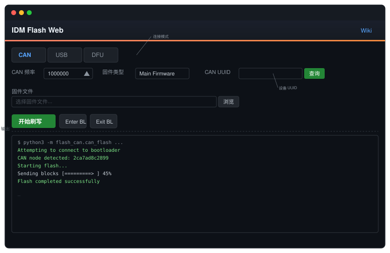

IDM Flash Web 使用手册
IDM Flash Web 是一个基于浏览器的固件刷写工具，用于给 IDM 3D 打印机传感器刷写固件。支持 CAN、USB 串口和 DFU 三种连接模式。

目录
支持模式
| 模式 | 适用场景 | 通信方式 |
|---|---|---|
| CAN | CAN 总线连接的设备 | CAN socket |
| USB | USB 串口连接的设备 | Serial (Katapult) |
| DFU | USB DFU 模式设备 | dfu-util |
快速开始
- 按照安装指南启动 IDM Flash Web
- 将打印机连接到上位机
- 打开 Web 界面：
http://<打印机IP>:8888 - 根据设备连接方式选择 CAN、USB 或 DFU 模式
- 选择要刷写的固件文件并点击「开始刷写」